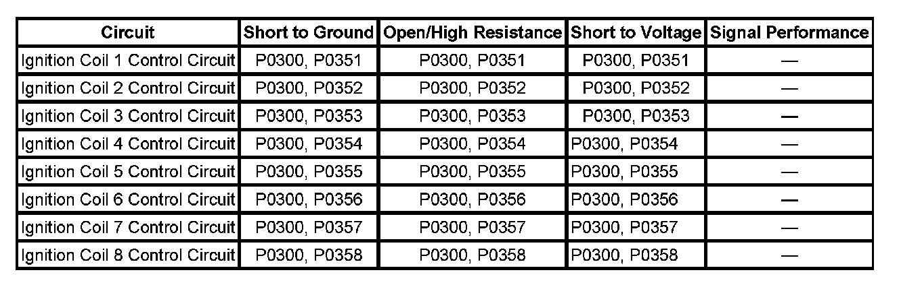

P0351
DTC P0351-P0358
DIAGNOSTIC INSTRUCTIONS
- Perform the Diagnostic System Check - Vehicle prior to using this diagnostic procedure. Initial Inspection and Diagnostic Overview
- Strategy Based Diagnosis for an overview of the diagnostic approach.
- Diagnostic Procedure Instructions provide an overview of each diagnostic category.
DTC DESCRIPTORS
DTC P0351
Ignition Coil 1 Control Circuit
DTC P0352
Ignition Coil 2 Control Circuit
DTC P0353
Ignition Coil 3 Control Circuit
DTC P0354
Ignition Coil 4 Control Circuit
DTC P0355
Ignition Coil 5 Control Circuit
DTC P0356
Ignition Coil 6 Control Circuit
DTC P0357
Ignition Coil 7 Control Circuit
DTC P0358
Ignition Coil 8 Control Circuit

DIAGNOSTIC FAULT INFORMATION
TYPICAL SCAN TOOL DATA
Engine Cylinders 1-8 Ignition Control (IC) Circuit Status:
CIRCUIT/SYSTEM DESCRIPTION
The ignition system on this engine uses an individual coil/module for each cylinder. The engine control module (ECM) controls the spark event for each cylinder through the eight individual ignition control (IC) circuits. When the ECM commands the IC circuit ON, electrical current will flow through the primary winding of the ignition coil, creating a magnetic field. When a spark event is requested, the ECM will command the IC circuit OFF, interrupting current flow through the primary winding. The magnetic field created by the primary winding will collapse across the secondary coil windings, producing a high voltage across the spark plug electrodes. The ECM uses information from the crankshaft position (CKP) sensor, and the camshaft position (CMP) sensor for sequencing and timing of the spark events. Each ignition module/coil assembly has the following electrical circuits attached.
- An ignition 1 voltage circuit
- A ground circuit
- An IC circuit
- A low reference circuit
If the ECM detects that the IC circuit has an incorrect voltage level, DTC P0351-P0358 will set.
CONDITIONS FOR RUNNING THE DTC
- The engine is cranking or running.
- DTC P0351-P0358 runs continuously when the above condition is met.
CONDITIONS FOR SETTING THE DTC
The ECM detects one of the following failures on the IC circuit:
- An open
- A short to ground
- A short to voltage
ACTION TAKEN WHEN THE DTC SETS
DTCs P0351-P0358 are Type B DTCs.
CONDITIONS FOR CLEARING THE DTC
DTCs P0351-P0358 are Type B DTCs.
DIAGNOSTIC AIDS
- This test procedure requires that the vehicle battery has passed a load test and is completely charged. Refer to Battery Inspection/Test. Battery Inspection/Test
- A high resistance condition on any ignition control (IC) circuit can cause an engine misfire without setting a P0351-P0358 DTC.
CIRCUIT/SYSTEM VERIFICATION
1. Start and run the engine.
2. Observe the Misfire Current counters using the scan tool. The counters should not be incrementing.
- If the counters are incrementing for any of the cylinders, continue with Circuit/System Testing.
- If the vehicle passes the Circuit/System Verification Test, then operate the vehicle within the Conditions for Running the DTC. You may also operate the vehicle within the conditions that are captured in the Freeze Frame/Failure Records Data List.
CIRCUIT/SYSTEM TESTING
1. Turn OFF the ignition.
2. Disconnect the ECM C2 harness connector.
3. IMPORTANT: A high resistance on any IC circuit can cause a misfire before the DTC sets.
Test the affected IC circuit for the following:
- Short to voltage
- Short to ground
- Open/high resistance
- If a fault is found, repair the circuit as needed.
4. Connect the ECM the C2 harness connector.
5. Exchange the affected ignition coil/module, with the ignition coil/module of a cylinder that is not affected.
6. Start the engine and observe the scan tool.
- If the DTC or the misfire transfers with the suspect ignition coil/module, replace that ignition coil/module assembly.
- If the DTC or the misfire does not transfer with the suspect ignition coil/module, replace the ECM.
REPAIR INSTRUCTIONS
- Ignition Coil Replacement.
- Engine Control Module Replacement and Control Module References for ECM replacement, setup, and programming
REPAIR VERIFICATION
Perform the Diagnostic Repair Verification after completing the diagnostic procedure. Verification Tests
If the customer concern was a flashing MIL, perform the following procedure:
1. Install any components that have been removed or replaced during the diagnostic process.
2. Perform any adjustments, programming or setup procedures that are required when a component is removed or replaced.
3. Clear the DTCs.
4. Turn OFF the ignition for 60 seconds.
5. If the repair was related to a DTC, duplicate the Conditions for Running the DTC and use the Freeze Frame/Failure Records, if applicable, in order to verify the DTC does not reset. If the DTC resets or another DTC is present, refer to Diagnostic Trouble Code (DTC) List - Vehicle and perform the appropriate diagnostic procedure. Diagnostic Trouble Code Descriptions
6. To verify that the performance of the catalytic converter has not been affected by the condition that set this DTC, perform the repair verification for DTCs P0420 and P0430. Refer to DTC P0420 or P0430. P0420 P0430